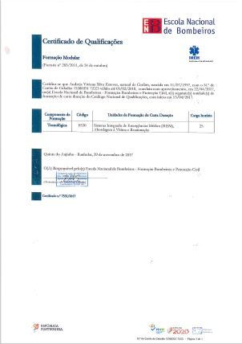
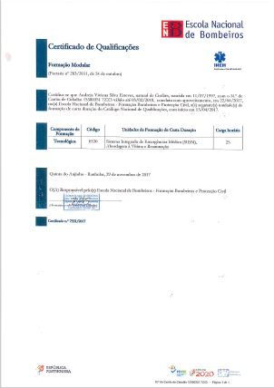

Nome: Andreia Vivivana Silva Esteves
Morada: Travessa de Santa Eulália - Cinfães
Email: andreiaratita@gmail.com
Data de Nascimento: 11/07/1997
Nacionalidade: Portuguesa
Natural: Cinfães
Estado civil: Solteira
Profissão: Estudante
| Unidade Curricular | Ano | Universidade |
|---|---|---|
| WebSIG e Ordenamento do Território | 2ºano - 1ºsemestre | Faculdade de Letras da Universidade do Porto |
| Seminário de Projeto | 2ºno - 1ºsemestre | Faculdade de Letras da Universidade do Porto |
| Estágio Curricular | 2ºano - 1ºsemestre | Instituto de Conservação da Natureza e das Florestas |
| Dissertação | 2ºano - 2ºsemestre | Faculdade de Letras da Universidade do Porto |
Espírito de equipa e inter-ajuda.
Sentido de organização em tarefas desempenhadas.
Sentido de responsabilidade.
Aquisição, análise e representação de informação geográfica.
Construção de Modelos Digitais de Terreno.
Perceção e Risco: Suscetibilidade, perigosidade e vulnerabilidade.
Competências na utilização de Softwares:
Software SIG (ArcGis).
Microsoft Office (Word, Excel, Publisher).
Software de estatística (SPSS).
HTML e CSS.
| Ano | Instituição | ||
|---|---|---|---|
| Línguas e Humanidade | 2010-2014 | Escola Secundária Prof. Dr. Flávio Pereira Resende de Cinfães | |
| Licenciatura em Geografia | 2016-2019 | Faculdade de Letras da Universidade do Porto | 15 valores |
| Bombeira Voluntária | 2017-Presente | Associação Humanitária do Bombeiros Voluntários de Cinfães | |
| Curso de Abordagem pré-hospitalar básica às emergências médicas e de trauma | 2017 | Associação Humanitária do Bombeiros Voluntários de Cinfães | |
| Curso de desencarceramento | 2017 | Associação Humanitária do Bombeiros Voluntários de Cinfães | |
| Curso de Suporte Básico de Vida | 2017 | Associação Humanitária do Bombeiros Voluntários de Cinfães |
Categoria B e B1, Ligeiros e averbamento do Grupo 2- VS-239175 0 (Data de Emissão: outubro de 2017)
 

Para aceder ao meu CV completo clique aqui